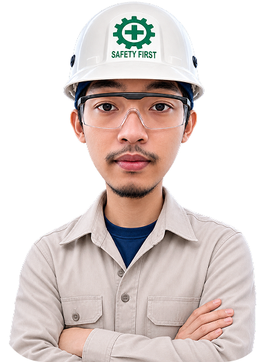

Hi, I am
Nadhif Alfaridzi Putratama
Mechatronic Engineering || Industrial Automation || Control Systems
Six-month internship experience in Electrical Applications & Robotics 1 at PT Astra Otoparts divisi Winteq

Six-month internship experience in Electrical Applications & Robotics 1 at PT Astra Otoparts divisi Winteq

Final-year Mechatronic Engineering student at Politeknik Astra with a strong interest in industrial automation, electrical engineering, control systems, and mechanical design.
Skilled in PLC, HMI, electrical wiring, system integration, CAD, and microcontroller/IoT through academic and industrial project experience. A dedicated and continuous learner with strong problem-solving, teamwork, communication, and adaptability skills.
Have an idea or an exciting opportunity? I’m always open to meaningful conversations, new challenges, and opportunities to collaborate, learn, and create impactful solutions together.